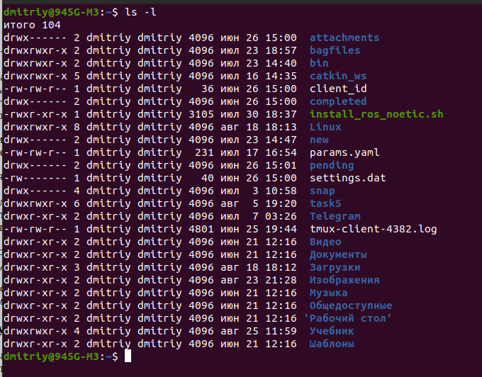
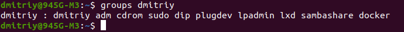
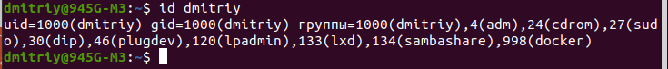

Система прав доступа на файл в linux
Ссылки: Права доступа к файлам в Linux
Основные права доступа к файлам в Linux
Как посмотреть права доступа к файлам в Linux
Посмотреть права доступа, атрибуты файла можно с помощью команды: ls -l

Первый символ указывает каталог или файл, если файл, то его тип. Далее с 2 по 4 права для владельца, 5-7 права для группы и 8-10 для всех остальных.
Рассмотрим подробнее, что значат условные значения флагов прав:
- - нет прав;
- x - разрешено право на выполнение файла;
- r - чтение; разрешает получать содержимое файла, но на запись нет. Для каталога позволяет получить список файлов и каталогов, расположенных в нем;
- w - запись; разрешает записывать новые данные в файл или изменять существующие, а также позволяет создавать и изменять файлы и каталоги
- s - установлен SUID или SGID бит;
- t - установлен sticky-bit, а значит пользователи не могут удалить этот файл.
Все эти права были бы бессмысленными, если бы применялись сразу для всех пользователей. Поэтому каждый файл имеет три категории пользователей, для которых можно устанавливать различные сочетания прав доступа:
- Владелец - набор прав для владельца файла, пользователя, который его создал или сейчас установлен его владельцем. Обычно владелец имеет все права, чтение, запись и выполнение.
- Группа - любая группа пользователей, существующая в системе и привязанная к файлу. Но это может быть только одна группа и обычно это группа владельца, хотя для файла можно назначить и другую группу.
- Остальные - все пользователи, кроме владельца и пользователей, входящих в группу файла.
Именно с помощью этих наборов полномочий устанавливаются права файлов в linux. Каждый пользователь может получить полный доступ только к файлам, владельцем которых он является или к тем, доступ к которым ему разрешен. Только пользователь Root может работать со всеми файлами независимо от их набора их полномочий.
Но со временем такой системы стало не хватать и было добавлено еще несколько флагов, которые позволяют делать файлы не изменяемыми или же выполнять от имени суперпользователя, их мы рассмотрим ниже:
Специальные права доступа к файлам в Linux
Для того, чтобы позволить обычным пользователям выполнять программы от имени суперпользователя без знания его пароля была придумана такая вещь, как SUID и SGID биты. Рассмотрим эти полномочия подробнее.
- SUID - если этот бит установлен, то при выполнении программы, id пользователя, от которого она запущена заменяется на id владельца файла. Фактически, это позволяет обычным пользователям запускать программы от имени суперпользователя;
- SGID - этот флаг работает аналогичным образом, только разница в том, что пользователь считается членом группы, с которой связан файл, а не групп, к которым он действительно принадлежит. Если SGID флаг установлен на каталог, все файлы, созданные в нем, будут связаны с группой каталога, а не пользователя. Такое поведение используется для организации общих папок;
- Sticky-bit - этот бит тоже используется для создания общих папок. Если он установлен, то пользователи могут только создавать, читать и выполнять файлы, но не могут удалять файлы, принадлежащие другим пользователям.
Теперь давайте рассмотрим как изменить права на файлы в Linux.
Как изменить права файла в Linux
Чтобы изменить права на файл в linux вы можете использовать утилиту chmod. Она позволяет менять все флаги, включая специальные.
Рассмотрим ее синтаксис:
chmod опции категориядействиефлаг файл
Опции сейчас нас интересовать не будут, разве что только одна. С помощью опции -R вы можете заставить программу применять изменения ко всем файлам и каталогам рекурсивно.
Категория указывает для какой группы пользователей нужно применять права, как вы помните доступно только три категории:
- u - владелец файла;
- g - группа файла;
- o - другие пользователи.
Действие может быть одно из двух, либо добавить - знак "+", либо убрать - знак "-". Что касается самих прав доступа, то они аналогичны выводу утилиты ls: r - чтение, w - запись, x - выполнение, s - suid/sgid, в зависимости от категории, для которой вы его устанавливаете, t - устанавливает sticky-bit.
Пример, всем пользователям полный доступ к файлу test5:
chmod ugo+rwx test5
Или заберем все права у группы и остальных пользователей:
chmod go-rwx test5
Дадим группе право на чтение и выполнение:
chmod g+rx test5
Остальным пользователям только чтение:
chmod o+r test5
Как видите, изменить права на файл в Linux очень просто. К тому же вы можете изменить основные права с помощью файлового менеджера.
Список групп находится в файле /etc/group. Чтобы просмотреть его, команда:
cat /etc/group
- daemon - от имени этой группы и пользователя daemon запускаютcя сервисы, которым необходима возможность записи файлов на диск.
- sys - группа открывает доступ к исходникам ядра и файлам include сохраненным в системе
- sync - позволяет выполнять команду /bin/sync
- games - разрешает играм записывать свои файлы настроек и историю в определенную папку
- man - позволяет добавлять страницы в директорию /var/cache/man
- lp - позволяет использовать устройства параллельных портов
- mail - позволяет записывать данные в почтовые ящики /var/mail/
- proxy - используется прокси серверами, нет доступа записи файлов на диск
- www-data - с этой группой запускается веб-сервер, она дает доступ на запись /var/www, где находятся файлы веб-документов
- list - позволяет просматривать сообщения в /var/mail
- nogroup - используется для процессов, которые не могут создавать файлов на жестком диске, а только читать, обычно применяется вместе с пользователем nobody.
- adm - позволяет читать логи из директории /var/log
- tty - все устройства /dev/vca разрешают доступ на чтение и запись пользователям из этой группы
- disk - открывает доступ к жестким дискам /dev/sd* /dev/hd*, можно сказать, что это аналог рут доступа.
- dialout - полный доступ к серийному порту
- cdrom - доступ к CD-ROM
- wheel - позволяет запускать утилиту sudo для повышения привилегий
- audio - управление аудиодрайвером
- src - полный доступ к исходникам в каталоге /usr/src/
- shadow - разрешает чтение файла /etc/shadow
- utmp - разрешает запись в файлы /var/log/utmp /var/log/wtmp
- video - позволяет работать с видеодрайвером
- plugdev - позволяет монтировать внешние устройства USB, CD и т д
- staff - разрешает запись в папку /usr/local
Управление группами Linux для пользователя выполняется с помощью команды usermod.
Синтаксис:
usermod опции имя_пользователя
Опции:
-G - дополнительные группы, в которые нужно добавить пользователя
-g изменить основную группу для пользователя
-R удалить пользователя из группы.
Добавить пользователя в группу можно командой usermod:
sudo usermod -a -G имя_группы имя_пользователя
Посмотреть куда входит Пользователь, можно командой:
groups Пользователь

Также можно использовать команду id. В этом случае дополнительно указанны id группы и пользователя.

Чтобы включить Пользователя в группу Linux, для основной группы используется опция -g:
sudo usermod -g группа Пользователь
Удалить пользователя из группы в linux командой с опцией R:
sudo usermod -R группа пользователь
удалить группу Linux можно командой:
sudo delgroup имя_группы